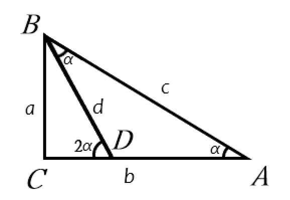

第一届 HGS 奖获奖论文全文
三角函数倍角公式的绝妙几何证明
Researcher: Dr.叶 (No.3 AS 总策划)
证明过程
在直角三角形 \(ABC\) 中，设 \(\angle C = 90^\circ\)，斜边 \(AB = c\)，直角边 \(BC = a\)、\(AC = b\)，且 \(\angle A = \alpha\)。

第一步：构造内接等腰三角形。在直角边 \(AC\) 上取一点 \(D\)，使得 \(AD = BD = d\)。因为 \(AD = BD\)，所以 \(\triangle ABD\) 是等腰三角形，底角相等：\(\angle DAB = \angle ABD = \alpha\)。看 \(\angle BDC\)，它是 \(\triangle ABD\) 的外角，因此 \(\angle BDC = 2\alpha\)。
第二步：求 \(d\)。在直角三角形 \(BCD\) 中，由勾股定理 \(a^2 + (b-d)^2 = d^2\)，展开并消去 \(d^2\) 得 \(c^2 = 2bd\)，所以 \(d = \frac{c^2}{2b}\)。
第三步：致命一击。在直角三角形 \(BCD\) 中，\(\sin 2\alpha = \frac{a}{d} = \frac{2ab}{c^2}\)。而原三角形中 \(\sin \alpha = \frac{a}{c}\)，\(\cos \alpha = \frac{b}{c}\)，所以 \(2\sin\alpha\cos\alpha = \frac{2ab}{c^2}\)。完美得到：
\(\sin 2\alpha = 2\sin\alpha\cos\alpha\)
同理可证 \(\cos 2\alpha = \cos^2\alpha - \sin^2\alpha\)。